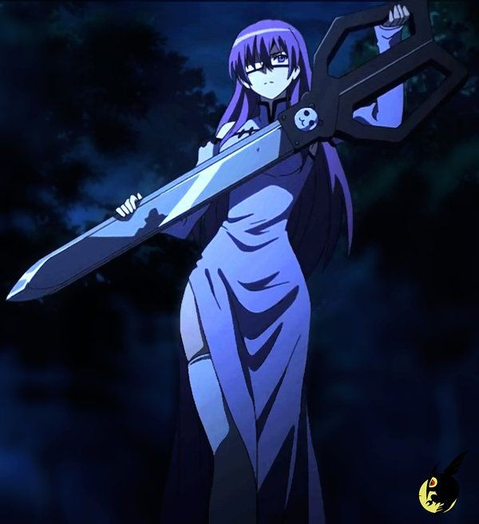
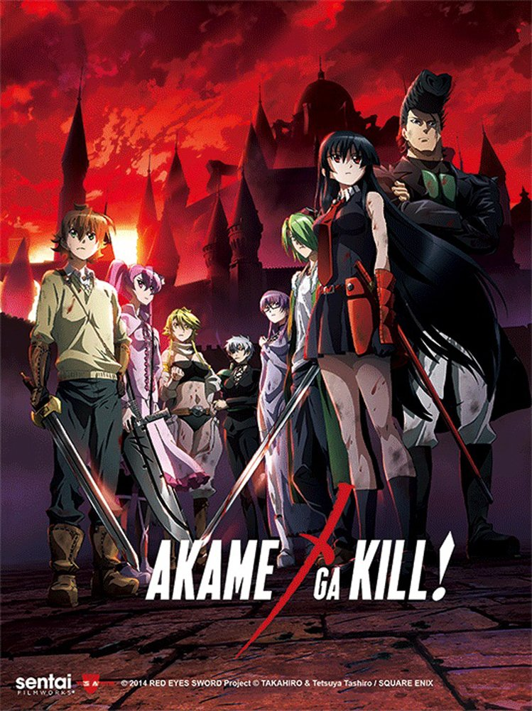
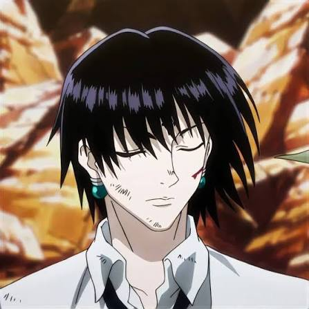
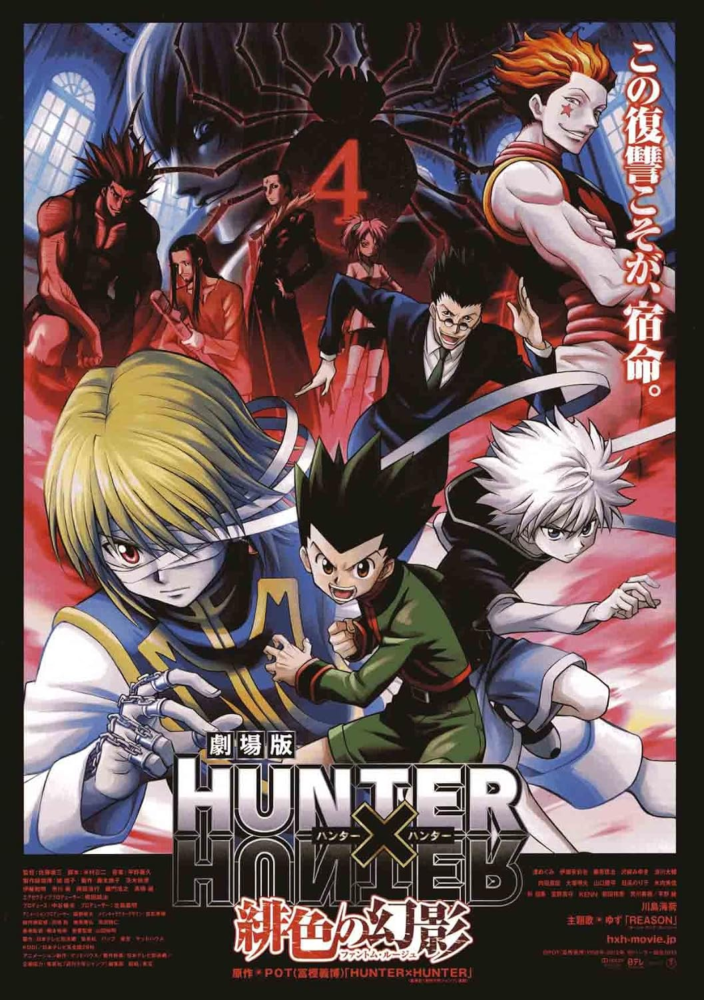
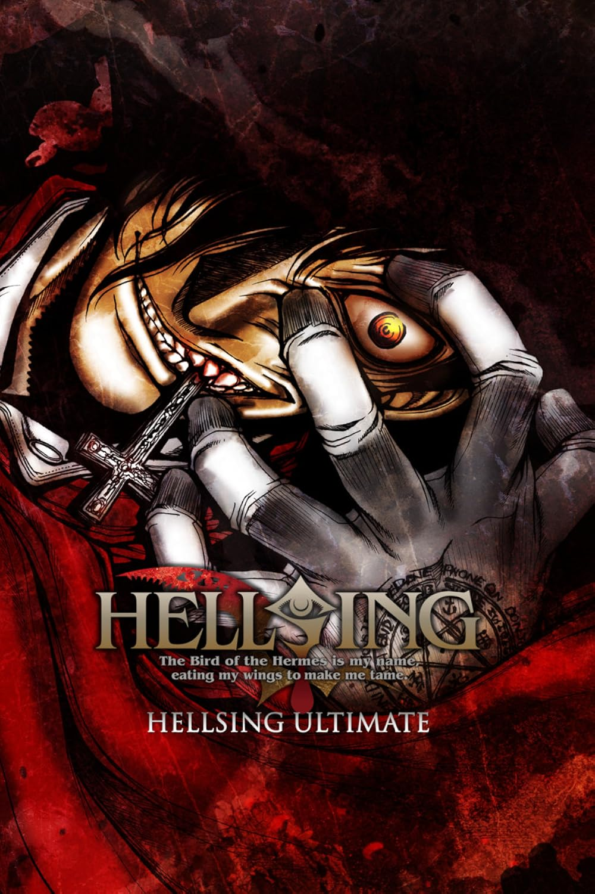

Sheele e uma das integrantes iniciais da Night Raid, o grupo de assassinos revolucionários do anime e mangá Akame ga Kill!.

poster de akame ga kill.
tretagonisca agustula
Sheele e uma das integrantes iniciais da Night Raid, o grupo de assassinos revolucionários do anime e mangá Akame ga Kill!.

poster de akame ga kill.
tretagonisca agustula
Chrollo Lucilfer é o carismático e enigmático líder da Trupe Fantasma (Gen'ei Ryodan), a infame organização de criminosos do anime e mangá Hunter x Hunter. Homem calmo, altamente inteligente e estrategista implacável, ele possui uma personalidade contraditória: não demonstra empatia por suas vítimas, mas possui uma lealdade inabalável e profundo afeto por seus companheiros de equipe.

poster de HunterxHunter.
tretagonisca agustula
e o protagonista da serie Hellsing, revelado como o proprio Conde Dracula transformado em servo leal apos ser derrotado por Abraham Van Helsing. Ele e o vampiro mais poderoso existente, atuando como a principal arma da Organizacao Hellsing na caca a monstros e forcas sobrenaturais

poster de hellsing.
tretagonisca agustula